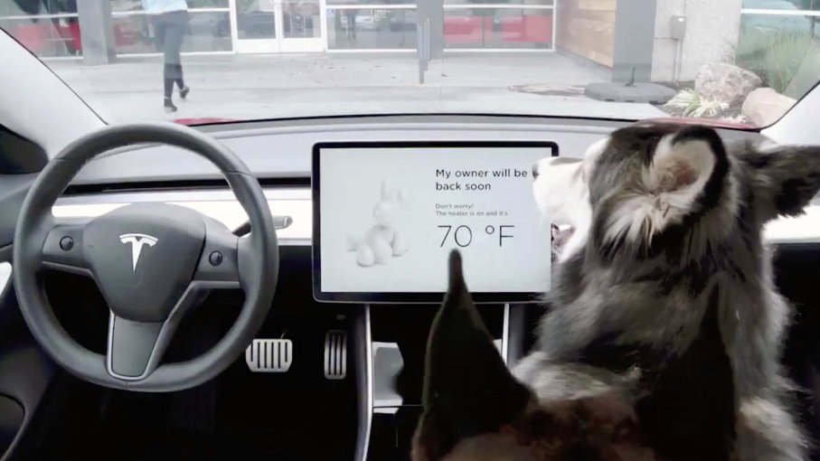

Better Safety: Approximately 94 percent of all the car crashes are caused by human error. If the autonomous cars make no mistake, we can decrease the amount of car crashes every year by a significant amount.
Lower Carbon Emissions: Carbon emissions will also be decreasing. Nearly all the self driving cars are either hybrid or electric.
Less Traffic: Companies developing driverless cars are developing cars that can communicate with each other. They will be able to identify the optimal route for travel. Companies like Benz and Ford are looking into developing connected autonomous cars.
Simply speaking, it is basically many sensors around a car detecting all kinds of things in the environment around the car with a central computer analyzing all the data and making the next move.This sounds very simple, but it is harder than you think. Radar sensors around the car monitor the positions of vehicles nearby. Video cameras watch out for traffic signs, lights, pedestrians and obstacles. Lidar sensors help detect the lanes and edges of roads. There are many more sensors that make sure no mistakes happen during driving.
Here we will talk about a few rather successful examples of driverless cars.
Tesla
Tesla have done quite well in the development of self driving cars. In fact, all Tesla cars that are now being produced has the hardware of auto piloting. Every Tesla car is equipped with eight surrounding cameras around it and a central computer to process all the data. 360 degrees of visibility and 250 meters of range. There are 12 surrounding ultrasonic sensors detecting both hard and soft objects and a forward facing radar to provide additional data. The radar also provides data under harsh conditions such as heavy rain, fog and dust.
The car has many advantages in convenience, you can also summon the car from a parking lot with a tap on your phone. The car will automatically find a parking spot once you reached your destination. The car also warns you for impending collisions from the front and side and will automatically brake. The autopilot mode, however, does require driver supervision.

The Google Car
Also known as the Waymo is a project started by Google in December 2016. Just like the Tesla autonomous cars, the technology also relies on the collection of data through the tested vehicles that are on the road. The Waymo builds a simulation of its environment using accurate maps. However, the environment changes, so the car is also built in with the LIDAR system.The LIDAR system uses lasers to generate a simulation of the nearby environment and then choose a course for the car to follow. The LIDAR system is different than Tesla’s technology which relies on video cameras rather than lasers.
Problems: The development have not always been going our way. In March 2018, Elaine Herzberg died when crossing a road when a Uber Self Driving Car failed to stop. Uber immediately suspended its development program in driverless cars. There is one crash every 3.34 million miles driven. The technology is still not perfect.
Summary: At the moment, driverless cars can only safely operate among other driverless cars under a controlled environment. The real world always changes, the moral judgement of a human driver is hard to fully predict and replicate. Until we can fully deal with other human drivers and pedestrians, the fully autonomous cars will pose a risk to the surrounding environment. There is still a long way to go.